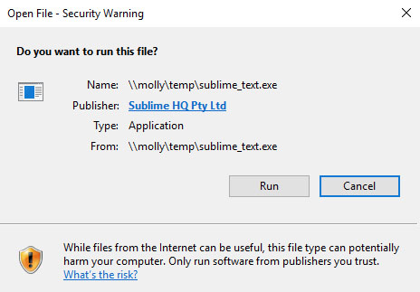
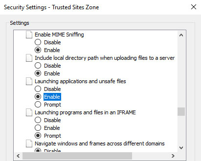

If you attempt to run an executable from a UNC path you may encounter an Open File - Security Warning dialog as shown below:

This dialog will be displayed if the server hosting the share is not within the Internet Explorer intranet zone. You can obviously prevent the dialog from appearing by adding the server to the intranet zone (in the form: file://\server\share), however, another option is to add the server to the trusted sites zone, and then customise the zone to allow the execution of unsafe files. This is achieved by enabling the Launching applications and unsafe files option via the trusted sites zone security settings dialog (the option is located under the Miscellaneous section) as shown below:

You can also set this option via group policy via: Computer Policy \ Policies \ Administrative Templates \ Windows Components \ Internet Explorer \ Internet Control Panel \ Security Page \ Trusted Sites Zone \ Show security warning for potentially unsafe files. To prevent the security warning dialog from appearing, enable this policy and set its value to Enable.